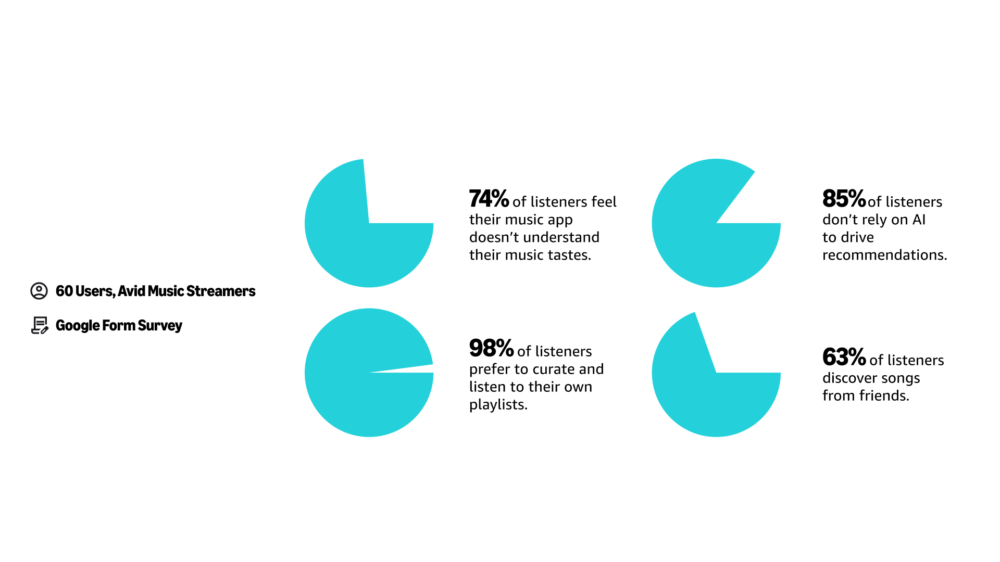
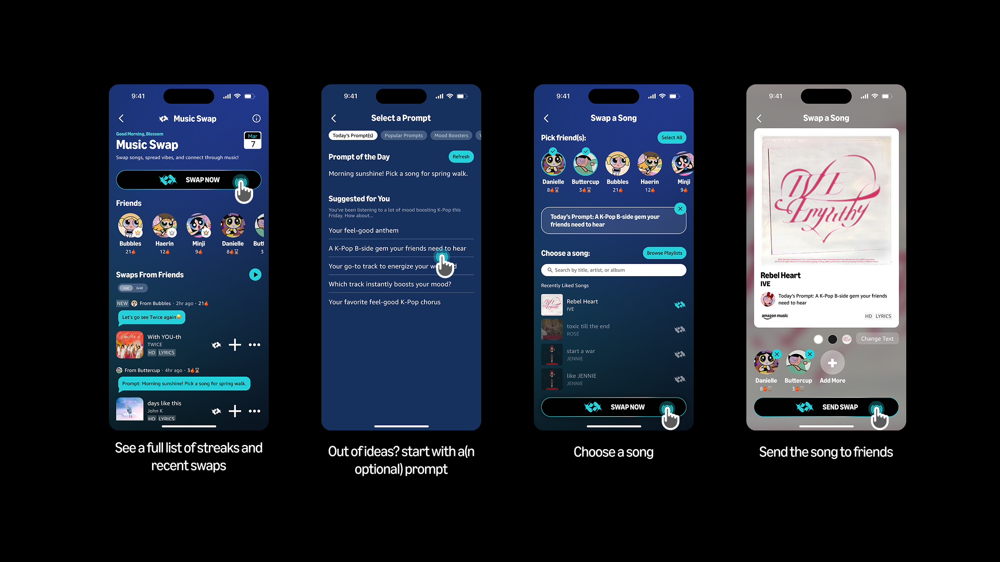
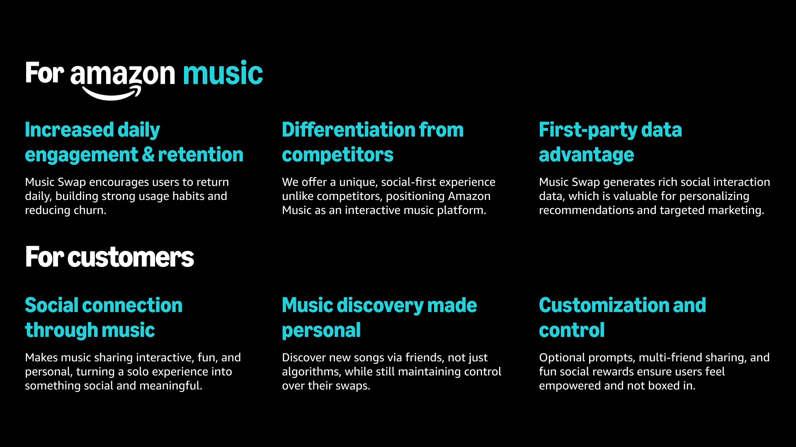

Amazon Music, Transforming Streaming into a Social Habit
As a part of a hackathon, Amazon Music is seeking a Customer Experience strategy to improve retention across its tiered offerings. The goal is to create a differentiating product that engages users, keeps them active month-over-month, and makes Amazon Music indispensable in their daily lives. This case study details our solution, Music Swap.
Listeners rely on personal connections to discover new music, rather than turning to AI algorithms.
Through surveys and interviews, we learned about their overall music listening habits, how they utilize AI in listening, and more. Here were four results that stood out the most to our team:

Feeling, humanity, and relationships are at the heart of how music spreads. At its core, music is more than sound. It's a bridge for connection, communication, and shared experience between people!
This led to the formation of our problem statement:
Music Swap is Amazon Music’s next step toward making music discovery more interactive, social, and retention-driven.
What does this mean for Amazon Music and its customers?
Key learnings throughout the process
An understanding of the customer is key to retention
All design choices and iterations were grounded on needs of real music listeners. After learning customers wanted convenience, not obligation, we created a flexible engagement model to ensure our solution resonated with our target audience.
AI is convenient, but customers want control
Recognizing its potential, we were first interested in an AI-solution. However, we realized through research that AI convenience doesn't mean control should be sacrificed. It’s not enough to personalize for customers; we need to personalize with them.
Features work best when they mimic real behavior
In real life, customers share music in group chats, social media stories, and community spaces—not just 1 on 1. That insight inspired multi-friend sharing and social feed elements, ensuring the product mirrored how customers naturally share.